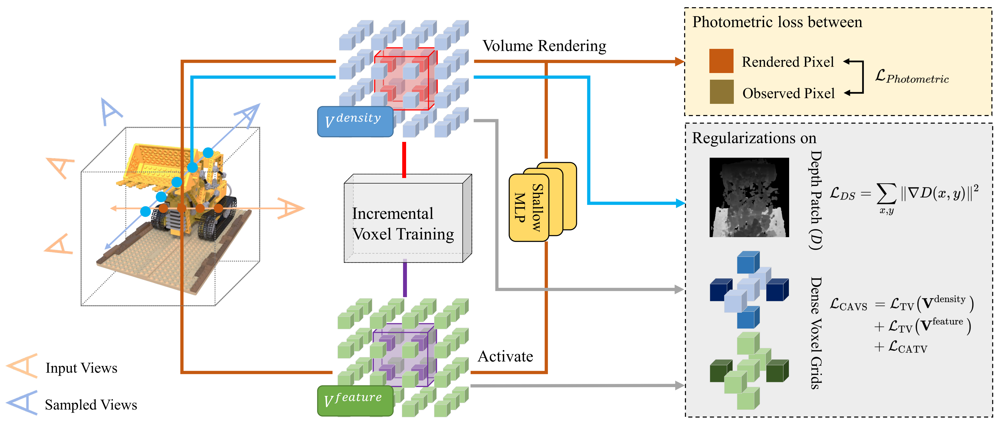
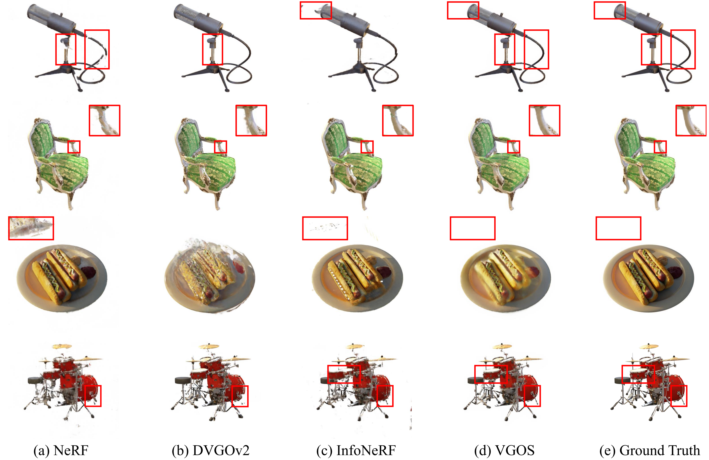
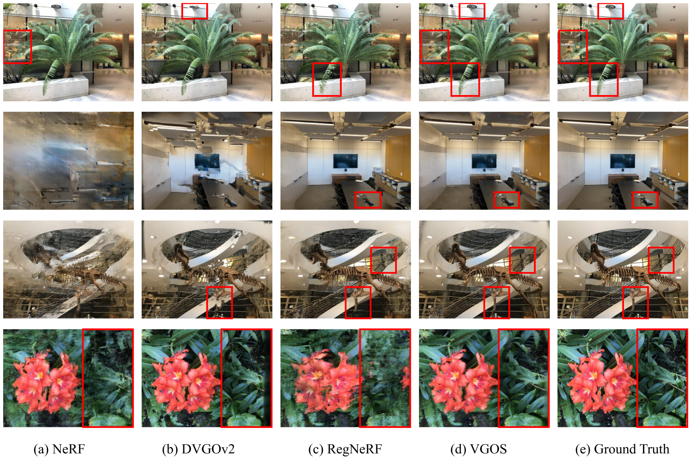

Neural Radiance Fields (NeRF) has shown great success in novel view synthesis due to its state-of-the-art quality and flexibility. However, NeRF requires dense input views (tens to hundreds) and a long training time (hours to days) for a single scene to generate high-fidelity images. Although using the voxel grids to represent the radiance field can significantly accelerate the optimization process, we observe that for sparse inputs, the voxel grids are more prone to overfitting to the training views and will have holes and floaters, which leads to artifacts.
In this paper, we propose VGOS, an approach for fast (3-5 minutes) radiance field reconstruction from sparse inputs (3-10 views) to address these issues. To improve the performance of voxel-based radiance field in sparse input scenarios, we propose two methods: (a) We introduce an incremental voxel training strategy, which prevents overfitting by suppressing the optimization of peripheral voxels in the early stage of reconstruction. (b) We use several regularization techniques to smooth the voxels, which avoids degenerate solutions.
Experiments demonstrate that VGOS achieves state-of-the-art performance for sparse inputs with super-fast convergence.

Except for the photometric loss from a given set of input images (orange views), the depth smoothness loss is imposed on the rendered depth patches from sampled views (blue views), and the voxel girds are regularized by the proposed color-aware voxel smoothness loss. Moreover, An incremental voxel training strategy is utilized to prevent overftting by expanding the range of optimized voxels (red and purple voxels) incrementally.


@inproceedings{ijcai2023p157,
title = {VGOS: Voxel Grid Optimization for View Synthesis from Sparse Inputs},
author = {Sun, Jiakai and Zhang, Zhanjie and Chen, Jiafu and Li, Guangyuan and Ji, Boyan and Zhao, Lei and Xing, Wei},
booktitle = {Proceedings of the Thirty-Second International Joint Conference on
Artificial Intelligence, {IJCAI-23}},
publisher = {International Joint Conferences on Artificial Intelligence Organization},
editor = {Edith Elkind},
pages = {1414--1422},
year = {2023},
month = {8},
note = {Main Track},
doi = {10.24963/ijcai.2023/157},
url = {https://doi.org/10.24963/ijcai.2023/157},
}